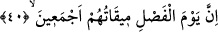

Bâtılın varlığı izâfî olduğu için varlık âleminde yalnız Hakk’ın bulunduğu gerçeğine
engel teşkil etmez. Görmüyor musun ki şeytan gölge varlığı ve insanları Hak’tan bâtıl ve
sapıklığa dâvet etmesi bakımından bâtıldır. Fakat kendi varlığı bakımından haktır.
Çünkü mevcuddur. Her mevcud da son tahlilde ilâhî tecellîlerin bir eseridir.
Hikâye edilir ki: Bir adam Arapların hunfesâ dediği pislik böceğini görüp: “Allah bu
böceği yaratmakla acaba neyi murâd etmiş olabilir ki? Şekli mi güzel, yoksa kokusu mu
hoştur?” dedi.
Bunun üzerine Allah Teâlâ adamı bir yaraya mübtelâ kıldı. Doktorlar âciz kalıp
tedâvîyi bıraktılar. Adam bir gün gezici bir halk doktorunun yolda seslendiğini işitti. Şu
doktoru getirin de benim derdime bir baksın, dedi.
Yanındakiler, senin tedâvînden bunca uzman hekim âciz kalmışken, bu adam ne
yapacak ki, dediler. Adam, bu adam bana lâzım, dedi.
Doktoru getirdiklerinde, doktor yarayı gördü ve bir pislik böceği getirilmesini istedi.
Orada bulunanlar bu duruma güldüler. Hasta adam daha önce bu yönde sarf etmiş
olduğu uygunsuz sözü hatırlayarak, istenen şeyi getirin, bu adam basîret sâhibidir, dedi.
Pislik böceğini getirdiler, adam böceği yakıp külünü hastanın yarasına koydu.
Allah’ın izniyle hasta iyileşti ve oradakilere şöyle dedi: Allah Teâlâ bana şunu öğretti
ki, yaratıkların en âdîsi ilaçların en azîzidir.
Nakşibendiye’nin büyüklerinden birisi anlatmıştır: Gençliğimde bir kötülük yapmak
için bir gece evden çıktım. Köyümüzde oldukça fenâ tabîatlı ve kötü bir gece bekçisi
vardı. Fenâ tabîat konusunda onun gibi birisini tanımıyordum. Bütün köy halkı ondan
korkardı. O gece onu bir yerde pusuda beklerken gördüğümde çok korktum ve
düşündüğüm kötülüğü yapmaktan vazgeçtim. O vakit anladım ki böyle kötü kimselerin
bile bu dünyâda bir görevi vardır. Çünkü Hakkın bazı zuhûrâtı bâtıl sûretinde gelir, bu
bâtıl sûreti de câhilden başkası inkâr etmez.
Kim ki görür Hak’tan başka bir varlık varlığın tamamında
Gafildir o Hakîkatler Hakîkati’nden
40. (Hakkın bâtıldan ayrılacağı) Hüküm günü, hepsinin varacağı gündür.
“Hüküm günü” kıyâmet günü, bütün yaratıkların “hepsinin varacağı gündür” yani
hakkın bâtıldan ayrılacağı, haklının haksızdan ayırd edileceği kıyâmet günü ki o gün
bütün yaratıklar arasında baba ile oğul, karı ile koca ve buna benzer niceleri arasında
hüküm verilecektir. Bazıları demiştir ki fasıl günü her amel edenin ameli ile kendi